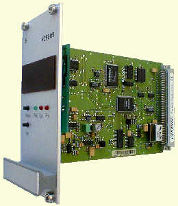
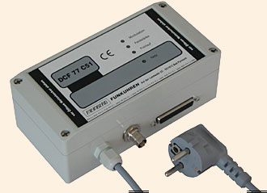
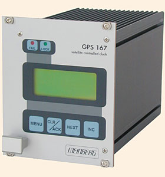

The timecode of these receivers is sampled via a STREAMS module in the kernel (The STREAMS module has been designed for use with SUN Systems under SunOS 4.1.x or Solaris 2.3 - 2.6. It can be linked directly into the kernel or loaded via the loadable driver mechanism). This STREAMS module can be adapted to be able to convert different time code formats. If the daemon is compiled without the STREAM definition synchronization will work without the Sun streams module, though accuracy is significantly degraded. This feature allows to use PARSE also on non Sun machines.
The actual receiver status is mapped into various synchronization states generally used by receivers. The STREAMS module is configured to interpret the time codes of DCF C51, PZF535, PZF509, GPS166, Trimble SV6 GPS, ELV DCF7000, Schmid, Wharton 400A and low cost receivers (see list below).
The reference clock support in ntp contains the necessary configuration tables for those receivers. In addition to supporting several different clock types and 4 devices, the generation a a PPS signal is also provided as an configuration option. The PPS configuration option uses the receiver generated time stamps for feeding the PPS loopfilter control for much finer clock synchronization.
CAUTION: The PPS configuration option is different from the hardware PPS signal, which is also supported (see below), as it controls the way ntpd is synchronized to the reference clock, while the hardware PPS signal controls the way time offsets are determined.
The use of the PPS option requires receivers with an accuracy of better than 1ms.
Fudge factors
Only two fudge factors are utilized. The time1 fudge factor defines the phase offset of the synchronization character to the actual time. On the availability of PPS information the time2 fudge factor defines the skew between the PPS time stamp and the receiver timestamp of the PPS signal. This parameter is usually zero, as usually the PPS signal is believed in time and OS delays should be corrected in the machine specific section of the kernel driver. time2 needs only be set when the actual PPS signal is delayed for some reason. The flag1 enables input filtering. This a median filter with continuous sampling. The flag2 selects averaging of the samples remaining after the filtering. Leap second-handling is controlled with the flag3. When set a leap second will be deleted on receipt of a leap second indication from the receiver. Otherwise the leap second will be added, (which is the default). flag3 should never be set. PPS handling is enabled by adding 128 to the mode parameter in the server/peer command.
ntpq (8)
timecode variable
The ntpq program can read clock variables command list several variables. These hold the following information: refclock_time is the local time with the offset to UTC (format HHMM). The currently active receiver flags are listed in refclock_status. Additional feature flags of the receiver are optionally listed in parentheses. The actual time code is listed in timecode. A qualification of the decoded time code format is following in refclock_format. The last piece of information is the overall running time and the accumulated times for the clock event states in refclock_states. When PPS information is present additional variable are available. refclock_ppstime lists then the PPS timestamp and refclock_ppsskew lists the difference between RS232 derived timestamp and the PPS timestamp.
Currently, eighteen clock types (devices /dev/refclock-0 - /dev/refclock-3) are supported by the PARSE driver.
A note on the implementations:
Verified implementations are:
These variants are tested for the decoding with my own homegrown receivers. Interfacing with specific commercial products may involve some fiddeling with cables. Especially commericial RAWDCF receivers have a seemingly unlimited number of ways to draw power from the RS232 port and to encode the DCF77 datastream. You are mainly on your own here unless i have a sample of the receiver.
These implementations are verified by the Meinberg people themselves and i have access to one of these clocks.
The pictures below refer to the respective clock and where taken from the vendors web pages. They are linked to the respective vendors.
Meinberg PZF535/PZF509 receiver (FM demodulation/TCXO / 50us)
Meinberg PZF535/PZF509 receiver (FM demodulation/OCXO / 50us)

Meinberg DCF U/A 31/DCF C51 receiver (AM demodulation / 4ms)

ELV DCF7000 (sloppy AM demodulation / 50ms)
Walter Schmid DCF receiver Kit (AM demodulation / 1ms)
RAW DCF77 100/200ms pulses (Conrad DCF77 receiver module / 5ms)
RAW DCF77 100/200ms pulses (TimeBrick DCF77 receiver module / 5ms)
Meinberg GPS166/GPS167 receiver (GPS / <<1us)

Trimble SVeeSix GPS receiverTAIP protocol (GPS / <<1us)
Trimble SVeeSix GPS receiver TSIP protocol (GPS / <<1us) (no kernel support yet)
Radiocode Clocks Ltd RCC 8000 Intelligent Off-Air Master Clock support
Diem's Computime Radio Clock
RAWDCF receiver (DTR=high/RTS=low)
WHARTON 400A Series Clocks with a 404.2 Serial Interface
RAWDCF receiver (DTR=low/RTS=high)
VARITEXT Receiver (MSF)
Actual data formats and set-up requirements of the various clocks can be found in NTP PARSE clock data formats.
The reference clock support carefully monitors the state transitions of the receiver. All state changes and exceptional events such as loss of time code transmission are logged via the syslog facility. Every hour a summary of the accumulated times for the clock states is listed via syslog.
PPS support is only available when the receiver is completely synchronized. The receiver is believed to deliver correct time for an additional period of time after losing synchronizations, unless a disruption in time code transmission is detected (possible power loss). The trust period is dependent on the receiver oscillator and thus a function of clock type. This is one of the parameters in the clockinfo field of the reference clock implementation. This parameter cannot be configured by ntpdc.
In addition to the PPS loopfilter control a true PPS hardware signal can be applied on Sun Sparc stations via the CPU serial ports on the CD pin. This signal is automatically detected and will be used for offset calculation. The input signal must be the time mark for the following time code. (The edge sensitivity can be selected - look into the appropriate kernel/parsestreams.c for details). Meinberg receivers can be connected by feeding the PPS pulse of the receiver via a 1488 level converter to Pin 8 (CD) of a Sun serial zs-port. To select PPS support the STREAMS driver for PARSE must be loaded and the mode parameter ist the mode value of above plus 128. If 128 is not added to the mode value PPS will be detected to be available but it will not be used. For PPS to be used you MUST add 128 to the mode parameter.
For the Meinberg GPS166/GPS167 receiver is also a special firmware release available (Uni-Erlangen). This release should be used for proper operation.
The raw DCF77 pulses can be fed via a level converter directly into Pin 3 (Rx) of the Sun. The telegrams will be decoded an used for synchronization. AM DCF77 receivers are running as low as $25. The accuracy is dependent on the receiver and is somewhere between 2ms (expensive) to 10ms (cheap). Upon bad signal reception of DCF77 synchronizations will cease as no backup oscillator is available as usually found in other reference clock receivers. So it is important to have a good place for the DCF77 antenna. For transmitter shutdowns you are out of luck unless you have other NTP servers with alternate time sources available.
Clock states statistics are written hourly the the syslog service. Online information can be found by examining the clock variable via the ntpq cv command.
The parse clock mechanismis deviated from the way other ntp reference clocks work. For a short description how to build parse reference clocks see making PARSE clocks
Additional Information